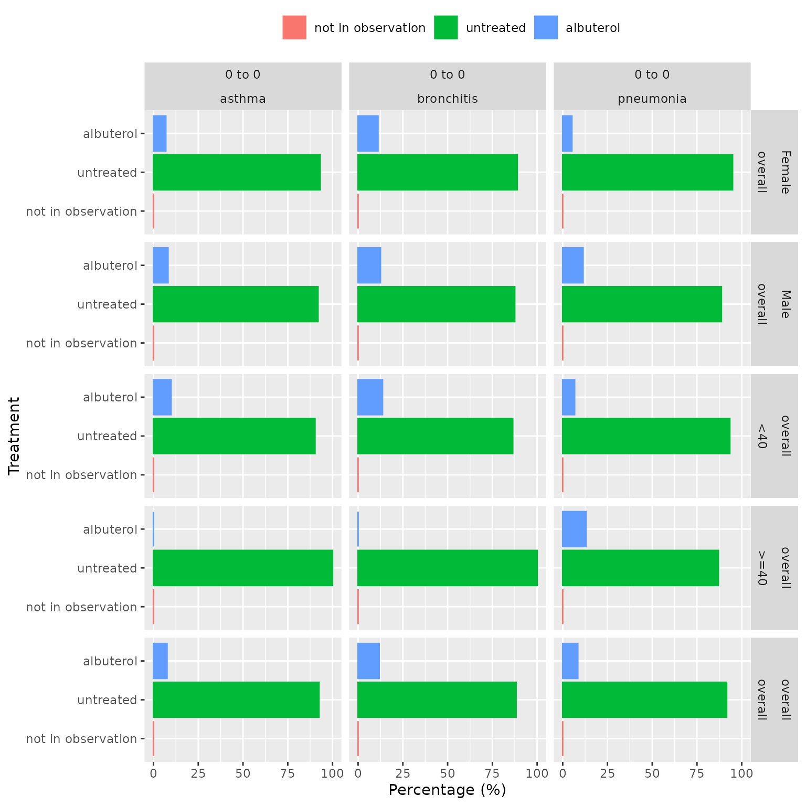

Introduction
After creating a study cohort, for example of some specific condition of interest, we may be interested in describing the treatments received by the individuals within it. Here we show how such a summary can be obtained.
Create mock table
We will use mock data contained in the package throughout the
vignette. Let’s modify cohort tables cohort1 and
cohort2 in our mock dataset, so the first table includes 3
cohorts of health conditions (our study cohorts), while the second
contains three are of treatments they could receive.
library(DrugUtilisation)
cdm <- mockDrugUtilisation(numberIndividual = 200)
new_cohort_set <- settings(cdm$cohort1) |>
dplyr::arrange(cohort_definition_id) |>
dplyr::mutate(cohort_name = c("asthma", "bronchitis", "pneumonia"))
cdm$cohort1 <- cdm$cohort1 |>
omopgenerics::newCohortTable(cohortSetRef = new_cohort_set)
new_cohort_set <- settings(cdm$cohort2) |>
dplyr::arrange(cohort_definition_id) |>
dplyr::mutate(cohort_name = c("albuterol", "fluticasone", "montelukast"))
cdm$cohort2 <- cdm$cohort2 |>
omopgenerics::newCohortTable(cohortSetRef = new_cohort_set)Notice that cohort1 is a cohort table with three cohorts
representing three different conditions:
settings(cdm$cohort1)
#> # A tibble: 3 × 2
#> cohort_definition_id cohort_name
#> <int> <chr>
#> 1 1 asthma
#> 2 2 bronchitis
#> 3 3 pneumoniaAnd cohort2 is a cohort table with three different
treatment cohorts:
settings(cdm$cohort2)
#> # A tibble: 3 × 2
#> cohort_definition_id cohort_name
#> <int> <chr>
#> 1 1 albuterol
#> 2 2 fluticasone
#> 3 3 montelukastSummarise treatment
The summariseTreatment() function produces a summary of
the treatment received by our study cohorts. There are three mandatory
arguments:
-
cohort: cohort from the cdm object. -
treatmentCohortName: name of the treatment cohort table. -
window: a list specifying the time windows during which treatments should be summarised.
See an example of its usage below, where we use
summariseTreatment() to summarise treatments defined in
cohort2 in the target cohorts defined in
cohort1.
summariseTreatment(
cohort = cdm$cohort1,
treatmentCohortName = c("cohort2"),
window = list(c(0, 0), c(1, 30))
)strata parameter
We can also stratify our cohort and calculate the estimates within
each strata group by using the strata parameter.
cdm[["cohort1"]] <- cdm[["cohort1"]] |>
PatientProfiles::addSex() |>
PatientProfiles::addAge(ageGroup = list("<40" = c(0, 39), ">=40" = c(40, 150)))
results <- summariseTreatment(
cohort = cdm$cohort1,
treatmentCohortName = c("cohort2"),
window = list(c(0, 0)),
treatmentCohortId = 1,
strata = list("sex", "age_group")
)Notice that we have also used the treatmentCohortId
parameter to specify that we only want to explore albuterol
(which corresponds to the cohort id 1 in our cohort table) across the
cohorts defined in cohort1.
other parameters
The summariseTreatment() functions also has other input
parameters which can be tuned:
-
cohortId: to restrict the analysis to a particular cohort definition id in the target cohort. -
indexDate: what column to use as the index date to start the analysis. By default we usecohort_start_date, but any other date column, such ascohort_end_date, can be specified instead. -
censorDate: whether to end the analysis at any specific date. Otherwise we will follow the individuals until end of their respective observation period. -
mutuallyExclusive: by default set to FALSE, this will consider the treatments separately, so an individual can belong to different treatment groups at the same time (i.e. if they are treated with multiple drugs). Therefore, for each target cohort, we could have a sum of percentages of all treatment drugs greater than 100%. If set to TRUE, non-overlapping treatment groups will be assessed (with multiple drugs in some of those if needed), so that all individuals will belong to only one of them, and the percentages will add up to a 100.
result_not_mutually_exc <- summariseTreatment(
cohort = cdm$cohort1,
treatmentCohortName = c("cohort2"),
window = list(c(0, 0))
)
#> ℹ Intersect with medications table (cohort2)
#> ℹ Summarising medications.
result_mutually_exc <- summariseTreatment(
cohort = cdm$cohort1,
treatmentCohortName = c("cohort2"),
window = list(c(0, 0)),
mutuallyExclusive = TRUE
)
#> ℹ Intersect with medications table (cohort2)
#> ℹ Summarising medications.
tableTreatment(result = result_not_mutually_exc)|
CDM name
|
||||
|---|---|---|---|---|
|
DUS MOCK
|
||||
| Treatment | Estimate name |
Cohort name
|
||
| asthma | bronchitis | pneumonia | ||
| Medication on index date | ||||
| albuterol | N (%) | 5 (7.58 %) | 6 (11.76 %) | 7 (8.43 %) |
| fluticasone | N (%) | 10 (15.15 %) | 5 (9.80 %) | 9 (10.84 %) |
| montelukast | N (%) | 6 (9.09 %) | 5 (9.80 %) | 2 (2.41 %) |
| untreated | N (%) | 45 (68.18 %) | 35 (68.63 %) | 65 (78.31 %) |
| not in observation | N (%) | 0 (0.00 %) | 0 (0.00 %) | 0 (0.00 %) |
tableTreatment(result = result_mutually_exc)|
CDM name
|
||||
|---|---|---|---|---|
|
DUS MOCK
|
||||
| Treatment | Estimate name |
Cohort name
|
||
| asthma | bronchitis | pneumonia | ||
| Medication on index date | ||||
| albuterol | N (%) | 5 (7.58 %) | 6 (11.76 %) | 7 (8.43 %) |
| fluticasone | N (%) | 10 (15.15 %) | 5 (9.80 %) | 9 (10.84 %) |
| montelukast | N (%) | 6 (9.09 %) | 5 (9.80 %) | 2 (2.41 %) |
| albuterol and fluticasone | N (%) | 0 (0.00 %) | 0 (0.00 %) | 0 (0.00 %) |
| albuterol and montelukast | N (%) | 0 (0.00 %) | 0 (0.00 %) | 0 (0.00 %) |
| fluticasone and montelukast | N (%) | 0 (0.00 %) | 0 (0.00 %) | 0 (0.00 %) |
| albuterol and fluticasone and montelukast | N (%) | 0 (0.00 %) | 0 (0.00 %) | 0 (0.00 %) |
| untreated | N (%) | 45 (68.18 %) | 35 (68.63 %) | 65 (78.31 %) |
| not in observation | N (%) | 0 (0.00 %) | 0 (0.00 %) | 0 (0.00 %) |
In this case, as no individual was given more than one of the treatment drugs, the percentages are the same. However, we can easily see how these analyses would provide different results in other contexts.
Visualise results
The package includes table and plot
functions to help visualise the results from
summariseTreatment(), like we have just used to show the
results above.
Tables
The tableTreatment() function generates a table in gt,
flextable, or tibble format from the summarised_result produced by
summariseTreatment(). This function has customisation
options to format the table according to user preferences.
tableTreatment(result = results)|
CDM name
|
||||||
|---|---|---|---|---|---|---|
|
DUS MOCK
|
||||||
| Sex | Age group | Treatment | Estimate name |
Cohort name
|
||
| asthma | bronchitis | pneumonia | ||||
| Medication on index date | ||||||
| overall | overall | albuterol | N (%) | 5 (7.58 %) | 6 (11.76 %) | 7 (8.43 %) |
| untreated | N (%) | 61 (92.42 %) | 45 (88.24 %) | 76 (91.57 %) | ||
| not in observation | N (%) | 0 (0.00 %) | 0 (0.00 %) | 0 (0.00 %) | ||
| Female | overall | albuterol | N (%) | 2 (6.90 %) | 3 (11.11 %) | 2 (5.13 %) |
| untreated | N (%) | 27 (93.10 %) | 24 (88.89 %) | 37 (94.87 %) | ||
| not in observation | N (%) | 0 (0.00 %) | 0 (0.00 %) | 0 (0.00 %) | ||
| Male | overall | albuterol | N (%) | 3 (8.11 %) | 3 (12.50 %) | 5 (11.36 %) |
| untreated | N (%) | 34 (91.89 %) | 21 (87.50 %) | 39 (88.64 %) | ||
| not in observation | N (%) | 0 (0.00 %) | 0 (0.00 %) | 0 (0.00 %) | ||
| overall | <40 | albuterol | N (%) | 5 (9.80 %) | 6 (13.64 %) | 4 (6.67 %) |
| untreated | N (%) | 46 (90.20 %) | 38 (86.36 %) | 56 (93.33 %) | ||
| not in observation | N (%) | 0 (0.00 %) | 0 (0.00 %) | 0 (0.00 %) | ||
| >=40 | albuterol | N (%) | 0 (0.00 %) | 0 (0.00 %) | 3 (13.04 %) | |
| untreated | N (%) | 15 (100.00 %) | 7 (100.00 %) | 20 (86.96 %) | ||
| not in observation | N (%) | 0 (0.00 %) | 0 (0.00 %) | 0 (0.00 %) | ||
Plots
The plotTreatment() function creates a bar plot showing
the percentage of treated and untreated in each cohort, stratum, and
time-window. This function offers customization options for colors,
faceting, and handling of strata.
plotTreatment(
result = results,
facet = sex + age_group ~ window_name + cohort_name,
colour = "variable_level"
)